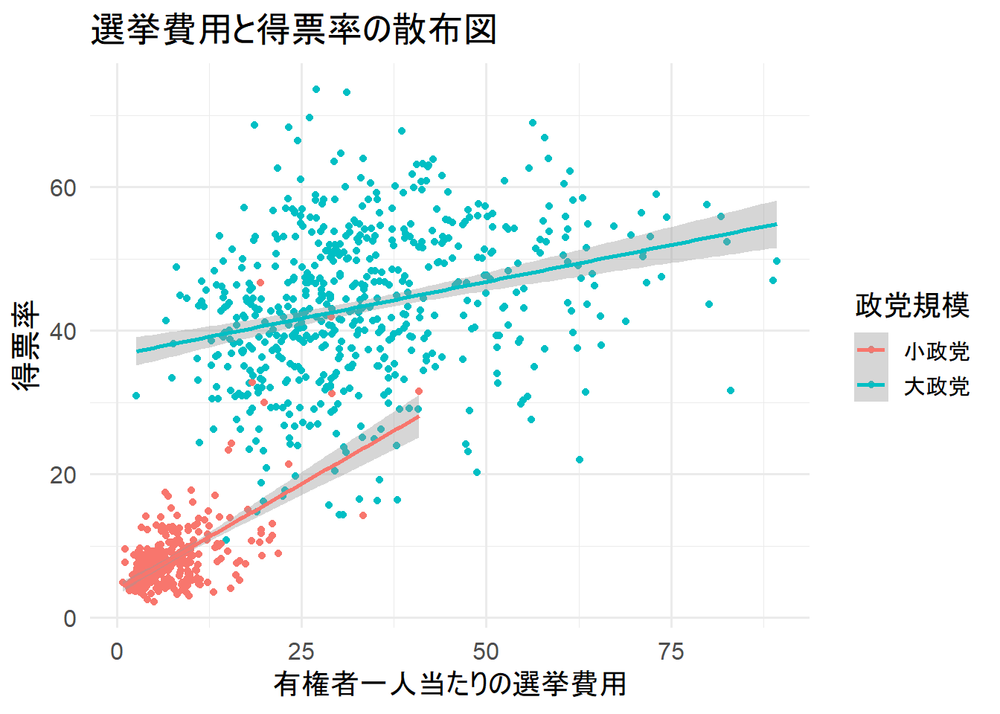

上位4政党に絞る
今回は簡単のために上位4政党に絞る。
data_2005 %>%
ggplot(aes(x = party_jpn)) +
geom_bar() +
labs(x = "")
data_2005 %<>% filter(party_jpn %in% c("自民党", "民主党", "社民党", "共産党"))
散布図
何の変哲もない散布図
恐らく正の相関がみられる。ただ、左下の存在が気になる。 （この記事を読んでいる人はこのクラスタがなにか知っていると思うが…）
data_2005 %>%
ggplot(aes(x = exppv, y = voteshare)) +
geom_point() +
labs(x = "有権者一人当たりの選挙費用", y = "得票率", title = "選挙費用と得票率の散布図")
回帰直線を引きたい(信頼区間あり)
とりま、どのような相関関係か知りたい場合は、回帰直線を引いてしまおう。
data_2005 %>%
ggplot(aes(x = exppv, y = voteshare)) +
geom_point() +
geom_smooth(method = "lm") +
labs(x = "有権者一人当たりの選挙費用", y = "得票率", title = "選挙費用と得票率の散布図")
回帰直線を引きたい(信頼区間なし)
信頼区間を出力したくない場合は、se = Fを指定しよう。
data_2005 %>%
ggplot(aes(x = exppv, y = voteshare)) +
geom_point() +
geom_smooth(method = "lm", se = F) +
labs(x = "有権者一人当たりの選挙費用", y = "得票率", title = "選挙費用と得票率の散布図")
多項式回帰の回帰直線を引く
なんとなく見た感じだと、一次式の回帰直線よりも2次式の回帰直線のほうが当てはまりが良さそう。 そんな時はgeom_smooth()にformula =を使って、回帰直線の式を指定しよう。 とりあえず、2次式と3次式の回帰直線を引いた。 恐らく、左下のクラスタでは正の相関で、真ん中のクラスタから軽い正の相関もしくは無相関となっていると考えられる。
data_2005 %>%
ggplot(aes(x = exppv, y = voteshare)) +
geom_point() +
geom_smooth(method = "lm", formula = y ~ poly(x, 2)) + # 二次式
geom_smooth(method = "lm", formula = y ~ poly(x, 3)) + # 三次式
labs(x = "有権者一人当たりの選挙費用", y = "得票率", title = "選挙費用と得票率の散布図")
クラスタごとに層化する
では実際に層化して散布図を作成する。 見事に予想通りとなった。左下のクラスタは正の相関を見せているが、真ん中のクラスタでは無相関と小さな正の相関が見られた。 このことから、回帰分析をする際は交差項を含める必要があると分かる。（大政党ダミーと言ったところか…）
data_2005 %>%
ggplot(aes(x = exppv, y = voteshare, color = party_jpn)) +
geom_point() +
geom_smooth(method = "lm") +
labs(x = "有権者一人当たりの選挙費用", y = "得票率",
title = "選挙費用と得票率の散布図", color = "政党") # labs()で"color = "hoge""を指定するとlegendのタイトルを変更できる
大政党ダミーを作成し、層化した散布図を作成する
実際に政党規模でダミー変数を作成し、層化した散布図を作成した。 大政党よりも小政党のほうが傾きが大きいとわかった。
data_2005 %>%
mutate("dummy" = if_else(party_jpn %in% c("自民党", "民主党"), "大政党", "小政党")) %>%
ggplot(aes(x = exppv, y = voteshare, color = dummy)) +
geom_point() +
geom_smooth(method = "lm") +
labs(x = "有権者一人当たりの選挙費用", y = "得票率",
title = "選挙費用と得票率の散布図", color = "政党規模")

pointを工夫すると…
alpha =とsize =に過去の当選回数を指定した。当選回数が多いとpointの色が濃くなり、大きな点となる。 また、geom_point()で点を出力すると点が見ずらい。そのため、geom_jitter()で点を散らして出力する。 これを見ると、新人が不利であることや当選する政治家はしっかりと金を使っていることが分かる。
set.seed(1) # geom_jitter()の散らばり方はランダムのため、散らばり方を固定する。
data_2005 %>%
ggplot(aes(x = exppv, y = smd)) +
geom_smooth(method = "lm", se = F) +
geom_jitter(aes(color = as.factor(smd),
alpha = previous,
size = previous),
show.legend = F) +
labs(x = "有権者一人当たりの選挙費用", y = "当選したか否か",
title = "選挙費用と得票率の散布図")
この記事のコードをまとめたものはGithubにあります。
LS0tDQp0aXRsZTogIlNjYXR0ZXJwbG90Ig0KZGF0ZTogImByIFN5cy50aW1lKClgIg0KLS0tDQoNCmBgYHtyLCBpbmNsdWRlPUZBTFNFfQ0Ka25pdHI6Om9wdHNfY2h1bmskc2V0KHdhcm5pbmcgPSBGLA0KICAgICAgICAgICAgICAgICAgICAgIG1lc3NhZ2UgPSBGLA0KICAgICAgICAgICAgICAgICAgICAgIGNvbW1lbnQgPSAiIiwNCiAgICAgICAgICAgICAgICAgICAgICBmaWcuYWxpZ24gPSAiY2VudGVyIikNCmBgYA0KDQojIOS9v+eUqOOBmeOCi+ODkeODg+OCseODvOOCuA0KDQpgYGB7cn0NCmxpYnJhcnkodGlkeXZlcnNlKQ0KbGlicmFyeShtYWdyaXR0cikNCmBgYA0KDQojIGdncGxvdDIg44GuIHRoZW1lIOOCkuOBguOCieOBi+OBmOOCgeioreWumuOBl+OBpuOBiuOBjw0KDQpgYGB7cn0NCnRoZW1lX3NldCh0aGVtZV9taW5pbWFsKGJhc2Vfc2l6ZSA9IDE1KSkNCmBgYA0KDQojIOS9v+eUqOOBmeOCi+ODh+ODvOOCvw0KDQrjg4fjg7zjgr/jga9b44GT44Gh44KJXSguL2RhdGEvSG91c2Vfb2ZfQ291bmNpbG9yc18xOTk2XzIwMTcuY3N2KQ0KDQpgYGB7cn0NCmRhdGEgPC0gcmVhZF9jc3YoIkRhdGEvSG91c2Vfb2ZfQ291bmNpbG9yc18xOTk2XzIwMTcuY3N2IikNCmBgYA0KDQojIOODh+ODvOOCv+WGheOBruWkieaVsOWQjeOCkueiuuiqjeOBmeOCiw0KDQpgYGB7cn0NCm5hbWVzKGRhdGEpDQpgYGANCg0KIyAyMDA15bm044Gr44OH44O844K/44KS57We44KLDQoNCmBgYHtyfQ0KZGF0YV8yMDA1IDwtIGRhdGEgJT4lIA0KICBmaWx0ZXIoeWVhciA9PSAyMDA1KSAlPiUgICMgMjAwNeW5tOOBruODh+ODvOOCv+OBq+e1nuOCiw0KICBkcm9wX25hKCkNCmBgYA0KDQojIOS4iuS9jTTmlL/lhZrjgavntZ7jgosNCg0K5LuK5Zue44Gv57Ch5Y2Y44Gu44Gf44KB44Gr5LiK5L2NNOaUv+WFmuOBq+e1nuOCi+OAgg0KDQpgYGB7cn0NCmRhdGFfMjAwNSAlPiUgDQogIGdncGxvdChhZXMoeCA9IHBhcnR5X2pwbikpICsNCiAgZ2VvbV9iYXIoKSArDQogIGxhYnMoeCA9ICIiKQ0KYGBgDQoNCmBgYHtyfQ0KZGF0YV8yMDA1ICU8PiUgZmlsdGVyKHBhcnR5X2pwbiAlaW4lIGMoIuiHquawkeWFmiIsICLmsJHkuLvlhZoiLCAi56S+5rCR5YWaIiwgIuWFseeUo+WFmiIpKQ0KYGBgDQoNCiMg5pWj5biD5ZuzDQoNCiMjIOS9leOBruWkieWTsuOCguOBquOBhOaVo+W4g+Wbsw0KDQrmgZDjgonjgY/mraPjga7nm7jplqLjgYzjgb/jgonjgozjgovjgILjgZ/jgaDjgIHlt6bkuIvjga7lrZjlnKjjgYzmsJfjgavjgarjgovjgIINCu+8iFvjgZPjga7oqJjkuotdKGh0dHBzOi8vcWlpdGEuY29tL0ZydWl0R3Jhbm9sYS9pdGVtcy9kOWFjZDE4N2JmNWU5M2U1YzU3ZSnjgpLoqq3jgpPjgafjgYTjgovkurrjga/jgZPjga7jgq/jg6njgrnjgr/jgYzjgarjgavjgYvnn6XjgaPjgabjgYTjgovjgajmgJ3jgYbjgYwuLi7vvIkNCg0KYGBge3J9DQpkYXRhXzIwMDUgJT4lIA0KICBnZ3Bsb3QoYWVzKHggPSBleHBwdiwgeSA9IHZvdGVzaGFyZSkpICsNCiAgZ2VvbV9wb2ludCgpICsNCiAgbGFicyh4ID0gIuacieaoqeiAheS4gOS6uuW9k+OBn+OCiuOBrumBuOaMmeiyu+eUqCIsIHkgPSAi5b6X56Wo546HIiwgdGl0bGUgPSAi6YG45oyZ6LK755So44Go5b6X56Wo546H44Gu5pWj5biD5ZuzIikNCmBgYA0KDQojIyDlm57luLDnm7Tnt5rjgpLlvJXjgY3jgZ/jgYQo5L+h6aC85Yy66ZaT44GC44KKKQ0KDQrjgajjgorjgb7jgIHjganjga7jgojjgYbjgarnm7jplqLplqLkv4LjgYvnn6XjgorjgZ/jgYTloLTlkIjjga/jgIHlm57luLDnm7Tnt5rjgpLlvJXjgYTjgabjgZfjgb7jgYrjgYbjgIINCg0KYGBge3J9DQpkYXRhXzIwMDUgJT4lIA0KICBnZ3Bsb3QoYWVzKHggPSBleHBwdiwgeSA9IHZvdGVzaGFyZSkpICsNCiAgZ2VvbV9wb2ludCgpICsNCiAgZ2VvbV9zbW9vdGgobWV0aG9kID0gImxtIikgKw0KICBsYWJzKHggPSAi5pyJ5qip6ICF5LiA5Lq65b2T44Gf44KK44Gu6YG45oyZ6LK755SoIiwgeSA9ICLlvpfnpajnjociLCB0aXRsZSA9ICLpgbjmjJnosrvnlKjjgajlvpfnpajnjofjga7mlaPluIPlm7MiKQ0KYGBgDQoNCiMjIOWbnuW4sOebtOe3muOCkuW8leOBjeOBn+OBhCjkv6HpoLzljLrplpPjgarjgZcpDQoNCuS/oemgvOWMuumWk+OCkuWHuuWKm+OBl+OBn+OBj+OBquOBhOWgtOWQiOOBr+OAgWBzZSA9IEZg44KS5oyH5a6a44GX44KI44GG44CCDQoNCmBgYHtyfQ0KZGF0YV8yMDA1ICU+JSANCiAgZ2dwbG90KGFlcyh4ID0gZXhwcHYsIHkgPSB2b3Rlc2hhcmUpKSArDQogIGdlb21fcG9pbnQoKSArDQogIGdlb21fc21vb3RoKG1ldGhvZCA9ICJsbSIsIHNlID0gRikgKw0KICBsYWJzKHggPSAi5pyJ5qip6ICF5LiA5Lq65b2T44Gf44KK44Gu6YG45oyZ6LK755SoIiwgeSA9ICLlvpfnpajnjociLCB0aXRsZSA9ICLpgbjmjJnosrvnlKjjgajlvpfnpajnjofjga7mlaPluIPlm7MiKQ0KYGBgDQoNCiMjIOWkmumgheW8j+WbnuW4sOOBruWbnuW4sOebtOe3muOCkuW8leOBjw0KDQrjgarjgpPjgajjgarjgY/opovjgZ/mhJ/jgZjjgaDjgajjgIHkuIDmrKHlvI/jga7lm57luLDnm7Tnt5rjgojjgorjgoIy5qyh5byP44Gu5Zue5biw55u057ea44Gu44G744GG44GM5b2T44Gm44Gv44G+44KK44GM6Imv44GV44Gd44GG44CCDQrjgZ3jgpPjgarmmYLjga9gZ2VvbV9zbW9vdGgoKWDjgatgZm9ybXVsYSA9YOOCkuS9v+OBo+OBpuOAgeWbnuW4sOebtOe3muOBruW8j+OCkuaMh+WumuOBl+OCiOOBhuOAgg0K44Go44KK44GC44GI44Ga44CBMuasoeW8j+OBqDPmrKHlvI/jga7lm57luLDnm7Tnt5rjgpLlvJXjgYTjgZ/jgIINCuaBkOOCieOBj+OAgeW3puS4i+OBruOCr+ODqeOCueOCv+OBp+OBr+ato+OBruebuOmWouOBp+OAgeecn+OCk+S4reOBruOCr+ODqeOCueOCv+OBi+OCiei7veOBhOato+OBruebuOmWouOCguOBl+OBj+OBr+eEoeebuOmWouOBqOOBquOBo+OBpuOBhOOCi+OBqOiAg+OBiOOCieOCjOOCi+OAgg0KDQpgYGB7cn0NCmRhdGFfMjAwNSAlPiUgDQogIGdncGxvdChhZXMoeCA9IGV4cHB2LCB5ID0gdm90ZXNoYXJlKSkgKw0KICBnZW9tX3BvaW50KCkgKw0KICBnZW9tX3Ntb290aChtZXRob2QgPSAibG0iLCBmb3JtdWxhID0geSB+IHBvbHkoeCwgMikpICsgIyDkuozmrKHlvI8NCiAgZ2VvbV9zbW9vdGgobWV0aG9kID0gImxtIiwgZm9ybXVsYSA9IHkgfiBwb2x5KHgsIDMpKSArICMg5LiJ5qyh5byPDQogIGxhYnMoeCA9ICLmnInmqKnogIXkuIDkurrlvZPjgZ/jgorjga7pgbjmjJnosrvnlKgiLCB5ID0gIuW+l+elqOeOhyIsIHRpdGxlID0gIumBuOaMmeiyu+eUqOOBqOW+l+elqOeOh+OBruaVo+W4g+WbsyIpDQpgYGANCg0KIyMg44Kv44Op44K544K/44GU44Go44Gr5bGk5YyW44GZ44KLDQoNCuOBp+OBr+Wun+mam+OBq+WxpOWMluOBl+OBpuaVo+W4g+Wbs+OCkuS9nOaIkOOBmeOCi+OAgg0K6KaL5LqL44Gr5LqI5oOz6YCa44KK44Go44Gq44Gj44Gf44CC5bem5LiL44Gu44Kv44Op44K544K/44Gv5q2j44Gu55u46Zai44KS6KaL44Gb44Gm44GE44KL44GM44CB55yf44KT5Lit44Gu44Kv44Op44K544K/44Gn44Gv54Sh55u46Zai44Go5bCP44GV44Gq5q2j44Gu55u46Zai44GM6KaL44KJ44KM44Gf44CCDQrjgZPjga7jgZPjgajjgYvjgonjgIHlm57luLDliIbmnpDjgpLjgZnjgovpmpvjga/kuqTlt67poIXjgpLlkKvjgoHjgovlv4XopoHjgYzjgYLjgovjgajliIbjgYvjgovjgILvvIjlpKfmlL/lhZrjg4Djg5/jg7zjgajoqIDjgaPjgZ/jgajjgZPjgo3jgYsuLi7vvIkNCg0KYGBge3J9DQpkYXRhXzIwMDUgJT4lIA0KICBnZ3Bsb3QoYWVzKHggPSBleHBwdiwgeSA9IHZvdGVzaGFyZSwgY29sb3IgPSBwYXJ0eV9qcG4pKSArDQogIGdlb21fcG9pbnQoKSArDQogIGdlb21fc21vb3RoKG1ldGhvZCA9ICJsbSIpICsNCiAgbGFicyh4ID0gIuacieaoqeiAheS4gOS6uuW9k+OBn+OCiuOBrumBuOaMmeiyu+eUqCIsIHkgPSAi5b6X56Wo546HIiwgDQogICAgICAgdGl0bGUgPSAi6YG45oyZ6LK755So44Go5b6X56Wo546H44Gu5pWj5biD5ZuzIizjgIBjb2xvciA9ICLmlL/lhZoiKSAjIGxhYnMoKeOBpyJjb2xvciA9ICJob2dlIiLjgpLmjIflrprjgZnjgovjgahsZWdlbmTjga7jgr/jgqTjg4jjg6vjgpLlpInmm7TjgafjgY3jgosNCmBgYA0KDQojIyDlpKfmlL/lhZrjg4Djg5/jg7zjgpLkvZzmiJDjgZfjgIHlsaTljJbjgZfjgZ/mlaPluIPlm7PjgpLkvZzmiJDjgZnjgosNCg0K5a6f6Zqb44Gr5pS/5YWa6KaP5qih44Gn44OA44Of44O85aSJ5pWw44KS5L2c5oiQ44GX44CB5bGk5YyW44GX44Gf5pWj5biD5Zuz44KS5L2c5oiQ44GX44Gf44CCDQrlpKfmlL/lhZrjgojjgorjgoLlsI/mlL/lhZrjga7jgbvjgYbjgYzlgr7jgY3jgYzlpKfjgY3jgYTjgajjgo/jgYvjgaPjgZ/jgIINCg0KYGBge3J9DQpkYXRhXzIwMDUgJT4lIA0KICBtdXRhdGUoImR1bW15IiA9IGlmX2Vsc2UocGFydHlfanBuICVpbiUgYygi6Ieq5rCR5YWaIiwgIuawkeS4u+WFmiIpLCAi5aSn5pS/5YWaIiwgIuWwj+aUv+WFmiIpKSAlPiUgDQogIGdncGxvdChhZXMoeCA9IGV4cHB2LCB5ID0gdm90ZXNoYXJlLCBjb2xvciA9IGR1bW15KSkgKw0KICBnZW9tX3BvaW50KCkgKw0KICBnZW9tX3Ntb290aChtZXRob2QgPSAibG0iKSArDQogIGxhYnMoeCA9ICLmnInmqKnogIXkuIDkurrlvZPjgZ/jgorjga7pgbjmjJnosrvnlKgiLCB5ID0gIuW+l+elqOeOhyIsIA0KICAgICAgIHRpdGxlID0gIumBuOaMmeiyu+eUqOOBqOW+l+elqOeOh+OBruaVo+W4g+WbsyIs44CAY29sb3IgPSAi5pS/5YWa6KaP5qihIikNCmBgYA0KDQojIyBwb2ludOOCkuW3peWkq+OBmeOCi+OBqC4uLg0KDQpgYWxwaGEgPWDjgahgc2l6ZSA9YOOBq+mBjuWOu+OBruW9k+mBuOWbnuaVsOOCkuaMh+WumuOBl+OBn+OAguW9k+mBuOWbnuaVsOOBjOWkmuOBhOOBqHBvaW5044Gu6Imy44GM5r+D44GP44Gq44KK44CB5aSn44GN44Gq54K544Go44Gq44KL44CCDQrjgb7jgZ/jgIFgZ2VvbV9wb2ludCgpYOOBp+eCueOCkuWHuuWKm+OBmeOCi+OBqOeCueOBjOimi+OBmuOCieOBhOOAguOBneOBruOBn+OCgeOAgWBnZW9tX2ppdHRlcigpYOOBp+eCueOCkuaVo+OCieOBl+OBpuWHuuWKm+OBmeOCi+OAgg0K44GT44KM44KS6KaL44KL44Go44CB5paw5Lq644GM5LiN5Yip44Gn44GC44KL44GT44Go44KE5b2T6YG444GZ44KL5pS/5rK75a6244Gv44GX44Gj44GL44KK44Go6YeR44KS5L2/44Gj44Gm44GE44KL44GT44Go44GM5YiG44GL44KL44CCDQoNCmBgYHtyfQ0Kc2V0LnNlZWQoMSkgIyBnZW9tX2ppdHRlcigp44Gu5pWj44KJ44Gw44KK5pa544Gv44Op44Oz44OA44Og44Gu44Gf44KB44CB5pWj44KJ44Gw44KK5pa544KS5Zu65a6a44GZ44KL44CCDQoNCmRhdGFfMjAwNSAlPiUgDQogIGdncGxvdChhZXMoeCA9IGV4cHB2LCB5ID0gc21kKSkgKw0KICBnZW9tX3Ntb290aChtZXRob2QgPSAibG0iLCBzZSA9IEYpICsNCiAgZ2VvbV9qaXR0ZXIoYWVzKGNvbG9yID0gYXMuZmFjdG9yKHNtZCksIA0KICAgICAgICAgICAgICAgICAgYWxwaGEgPSBwcmV2aW91cywNCiAgICAgICAgICAgICAgICAgIHNpemUgPSBwcmV2aW91cyksDQogICAgICAgICAgICAgIHNob3cubGVnZW5kID0gRikgKw0KICBsYWJzKHggPSAi5pyJ5qip6ICF5LiA5Lq65b2T44Gf44KK44Gu6YG45oyZ6LK755SoIiwgeSA9ICLlvZPpgbjjgZfjgZ/jgYvlkKbjgYsiLCANCiAgICAgICB0aXRsZSA9ICLpgbjmjJnosrvnlKjjgajlvpfnpajnjofjga7mlaPluIPlm7MiKQ0KYGBgDQoNCjxIUj4NCg0K44GT44Gu6KiY5LqL44Gu44Kz44O844OJ44KS44G+44Go44KB44Gf44KC44Gu44GvW0dpdGh1Yl0oaHR0cHM6Ly9naXRodWIuY29tL0ZydWl0R3Jhbm9sYS9SX1NjYXR0ZXJwbG90KeOBq+OBguOCiuOBvuOBmeOAgg0KDQo8YnV0dG9uPltIb21l44Gr5oi744KLXShpbmRleC5odG1sKTwvYnV0dG9uPg0K